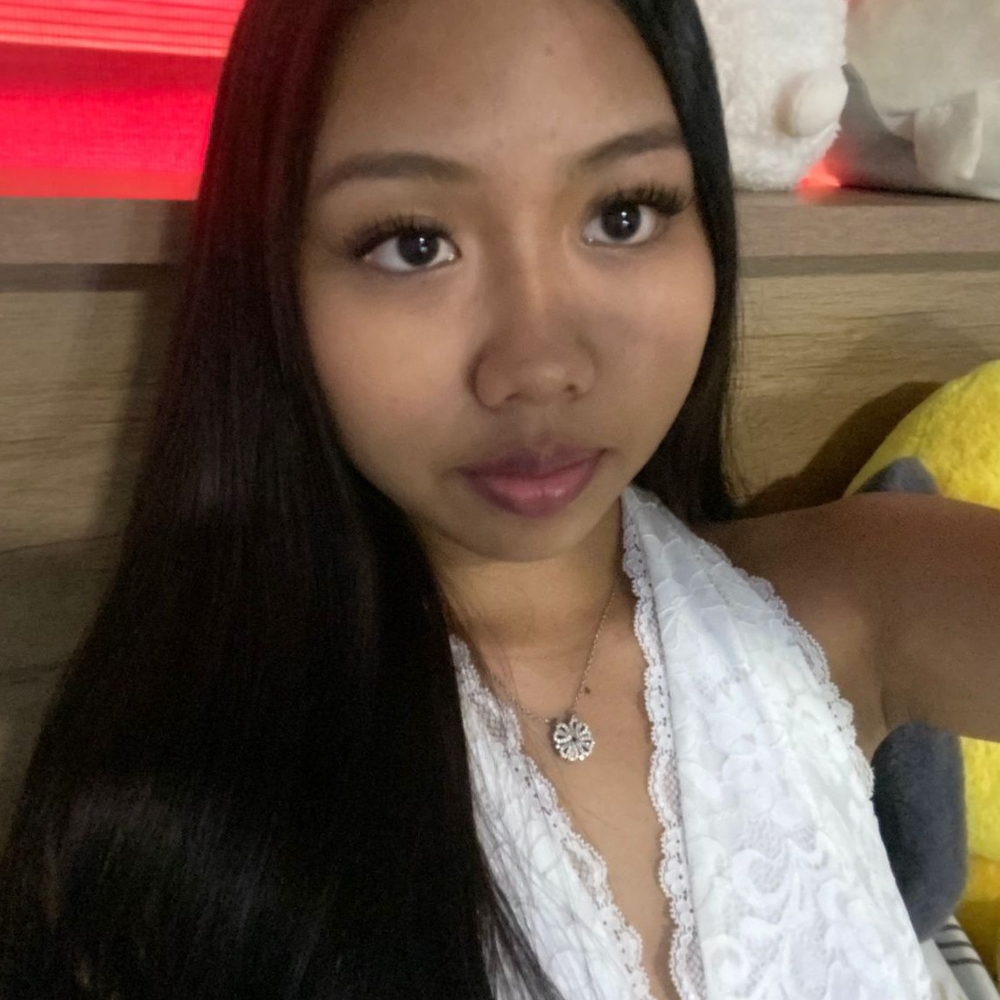
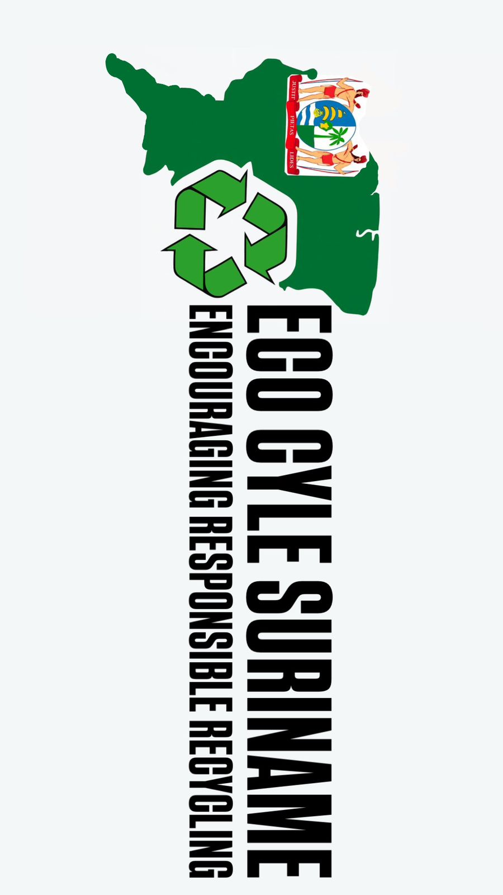
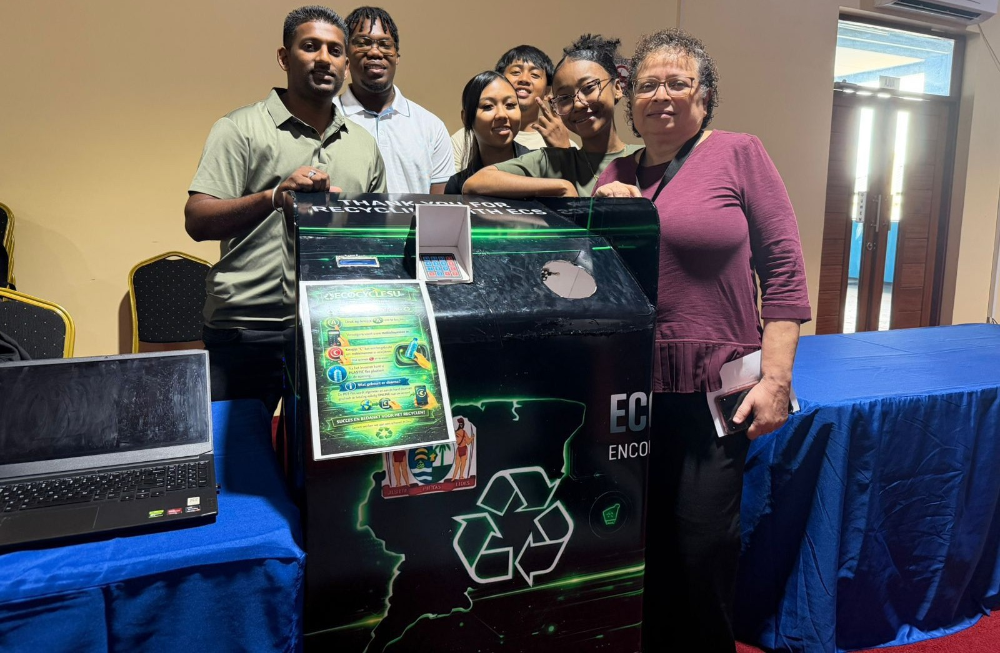
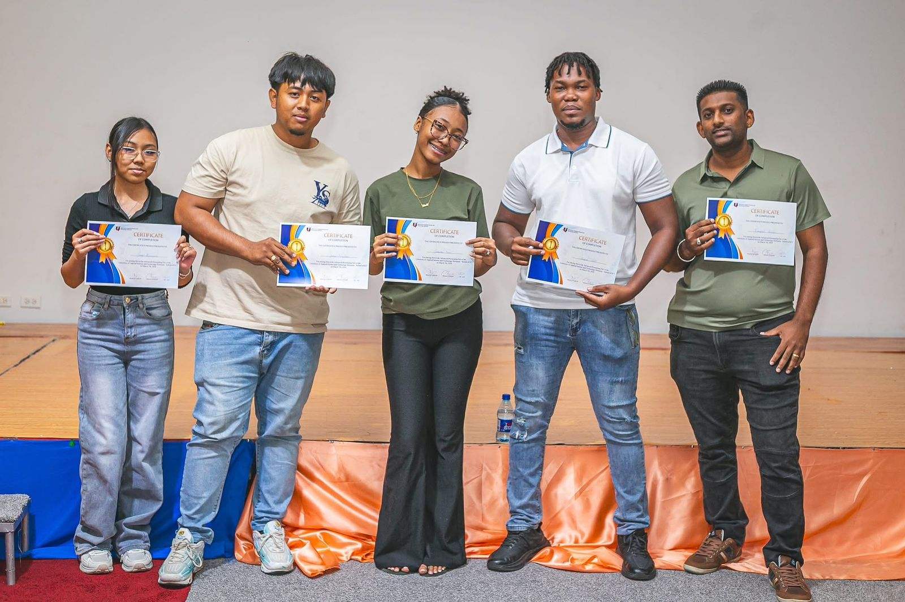

Hallo, ik ben
Jezefel Djojopawiro
Enthousiaste en ambitieuze ICT-student met interesse in softwareontwikkeling en technologie. Creatief, leergierig en sterk in zowel zelfstandig als teamwork. Gemotiveerd om nieuwe vaardigheden te ontwikkelen en bij te dragen aan innovatieve digitale oplossingen.
About Me
Mijn naam is Djojopawiro Jezefel. Ik ben geboren op 10 november 2008 te Paramaribo en woon aan de Bakapasi 96 in het district Commewijne. Mijn hobby’s en interesses liggen vooral in creativiteit en technologie. ik houd van zingen, naar muziek luisteren en samen met mijn vriendinnen nieuwe plekken ontdekken. Ik geniet ervan om leuke herinneringen te maken en bijzondere momenten met elkaar te delen.
Vaardigheden
Leergierig
Teamwork
Creativiteit
Opleidingen
Mijn schoolloopbaan begon op MULO Ellen, waar ik van 2020 tot 2023 de B-richting succesvol heb afgerond. Tijdens mijn derde leerjaar slaagde ik voor het toelatingsexamen, waarna ik de overstap maakte naar het HAVO-R pakket.
In 2025 succesvol afgestudeerd en het HAVO-diploma behaald. Tijdens deze opleiding heb ik mijn kennis op diverse vakgebieden verder verbreed, mijn analytische en probleemoplossende vaardigheden versterkt en een sterke basis gelegd voor mijn vervolgstudie in ICT.
Momenteel volg ik de opleiding ICT Software Engineering, gericht op softwareontwikkeling, programmeren en digitale oplossingen. Tijdens mijn studie werk ik aan praktijkgerichte projecten en ontwikkel ik mijn technische vaardigheden binnen de ICT.
Projecten
Eco Cycle Suriname
Het logo van Eco Cycle Suriname staat symbool voor duurzaamheid, innovatie en milieubewust zijn. De groene kler vertegenwoordigt de natuur, groei en duurzame toekomst. De cirkel in het logo verwijst naar recycling, waarbij de afhaal niet wordt weggegooid, maar opnieuw wordt gebruikt als grondstof. Het logo laat zien dat wij streven naar een schoner Suriname door technologie en duurzaamheid met elkaar te verbinden

Eco Cycle Suriname
Op Zaterdag 7 maart 2026 werd de UNASAT Prototyping Fair 2026 georganiseerd in de Aula op de campus van UNASAT. Tijdens deze beurs presenteerde wij als eerste jaars ICT-studenten onze prototype en innovatieve oplossingen aan de docenten, medestudenten en bezoekers. Ons project maakte gebruik van technologie, programmering.Dit event bood ons als student de mogelijkheid om ons kennis in de praktijkt toe te passen.

Eco Cycle Suriname
Met veel trots en enthousiasme maken wij bekend dat ons project Eco Cycle Suriname de eerste plaats heeft behaald tijdens de UNASAT Prototyping Fair 2026. Deze prestatie is het resultaat van hard werken, teamwork, innovatie en onze gezamelijke inzet om een duurzame oplossing te ontwikkelen voor plastic vervuiling in Suriname. Wij zijn iedereen bijzonder dankbaar die ons geholpen heeft aan dit project.
